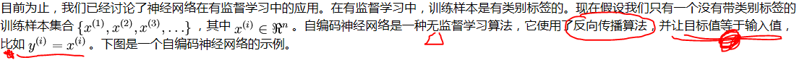

 | 自编码神经网络尝试学习一个  的函数。换句话说，它尝试逼近一个恒等函数，从而使得输出 的函数。换句话说，它尝试逼近一个恒等函数，从而使得输出  接近于输入 接近于输入  。 。事实上，这一简单的自编码神经网络通常可以学习出一个跟主元分析（PCA）结果非常相似的输入数据的低维表示。 | 恒等函数虽然看上去不太有学习的意义，但是当我们为自编码神经网络加入某些限制，比如限定隐藏神经元的数量，我们就可以从输入数据中发现一些有趣的结构。举例来说，假设某个自编码神经网络的输入  是一张 是一张  图像（共100个像素）的像素灰度值，于是 图像（共100个像素）的像素灰度值，于是  ，其隐藏层 ，其隐藏层  中有50个隐藏神经元。注意，输出也是100维的 中有50个隐藏神经元。注意，输出也是100维的  。由于只有50个隐藏神经元，我们迫使自编码神经网络去学习输入数据的压缩表示，也就是说，它必须从50维的隐藏神经元激活度向量 中重构出100维的像素灰度值输入 。 。由于只有50个隐藏神经元，我们迫使自编码神经网络去学习输入数据的压缩表示，也就是说，它必须从50维的隐藏神经元激活度向量 中重构出100维的像素灰度值输入 。 |
稀疏性：
如果当神经元的输出接近于1的时候我们认为它被激活，而输出接近于0的时候认为它被抑制，那么使得神经元大部分的时间都是被抑制的限制则被称作稀疏性限制。这里我们假设的神经元的激活函数是sigmoid函数。如果你使用tanh作为激活函数的话，当神经元输出为-1的时候，我们认为神经元是被抑制的。
激活度表示：
注意到  表示隐藏神经元
表示隐藏神经元  的激活度，但是这一表示方法中并未明确指出哪一个输入
的激活度，但是这一表示方法中并未明确指出哪一个输入  带来了这一激活度。所以我们将使用
带来了这一激活度。所以我们将使用  来表示在给定输入为
来表示在给定输入为  情况下，自编码神经网络隐藏神经元
情况下，自编码神经网络隐藏神经元  的激活度。 进一步，让
的激活度。 进一步，让
表示隐藏神经元 的激活度，但是这一表示方法中并未明确指出哪一个输入 带来了这一激活度。所以我们将使用 来表示在给定输入为 情况下，自编码神经网络隐藏神经元 的激活度。 进一步，让
表示隐藏神经元  的平均活跃度（在训练集上取平均）。我们可以近似的加入一条限制 ：
的平均活跃度（在训练集上取平均）。我们可以近似的加入一条限制 ： 
的平均活跃度（在训练集上取平均）。我们可以近似的加入一条限制 ： 其中， 是稀疏性参数，通常是一个接近于0的较小的值（比如  ）。换句话说，我们想要让隐藏神经元
）。换句话说，我们想要让隐藏神经元  的平均活跃度接近0.05。为了满足这一条件，隐藏神经元的活跃度必须接近于0。
的平均活跃度接近0.05。为了满足这一条件，隐藏神经元的活跃度必须接近于0。
）。换句话说，我们想要让隐藏神经元 的平均活跃度接近0.05。为了满足这一条件，隐藏神经元的活跃度必须接近于0。惩罚因子：
惩罚因子将惩罚那些  和
和  有显著不同的情况从而使得隐藏神经元的平均活跃度保持在较小范围内。惩罚因子的具体形式有很多种合理的选择，我们将会选择以下这一种：
有显著不同的情况从而使得隐藏神经元的平均活跃度保持在较小范围内。惩罚因子的具体形式有很多种合理的选择，我们将会选择以下这一种：
和 有显著不同的情况从而使得隐藏神经元的平均活跃度保持在较小范围内。惩罚因子的具体形式有很多种合理的选择，我们将会选择以下这一种：
 | 我们可以看出，相对熵在  时达到它的最小值0，而当 时达到它的最小值0，而当  靠近0或者1的时候，相对熵则变得非常大（其实是趋向于 靠近0或者1的时候，相对熵则变得非常大（其实是趋向于 ）。所以，最小化这一惩罚因子具有使得 ）。所以，最小化这一惩罚因子具有使得  靠近 靠近  的效果。 现在，我们的总体代价函数可以表示为： 的效果。 现在，我们的总体代价函数可以表示为：  |